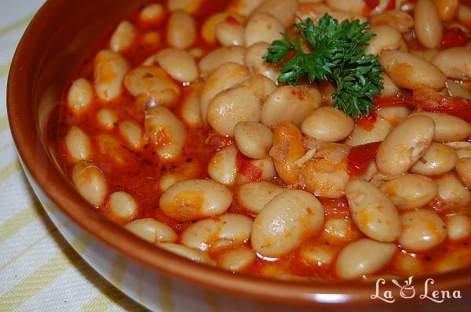

Iahnie de fasole

Dificultate-ușor
Timp de preparare-120 min
Cantitatea-1kg
Pasul 1 Primul pas si cel mai de lunga durata este sa fierbeti fasolea.
Puteti s-o inmuiati in apa peste noapte si a 2-a zi va fierbe mult mai repede si bine. Eu pun de obicei de 3-4 ori mai multa apa la fiert decat fasole, mai adaug frunze de dafin, 2 linguri de ulei si o ceapa cruda intreaga.
Aici am fiert-o timp de 5 ore la multicooker, neinmuiata cu 2 frunze de dafin.
Pasul 2 Cand a fiert fasolea si cam cu o ora inainte sa fie gata mancarea va apucati de facut iahnia.
Intr-o tigaie incingeti uleiul, adaugati ceapa taiata cubulete sau julien si lasati 2 minute.
Pasul 3 Apoi adaugati ardeiul taiat cubulete sau julien, amestecati bine si caliti impreuna cam 5 minute.
Pasul 4 Acum adaugati rosiile taiate cuburi, amestecati si mai lasati 5 minute la foc mediu.
Pasul 5 Puneti si pasta de ardei/tomate - eu o prefer pe cea de ardei. O cumpar pe cea dulce de la magaiznele arabesti sau de la raionul de produse internationale la Carrefour. Amestecati bine si mai lasati 2 minute.
Pasul 6 Acum adaugati fasolea fiarta, eu o pun si cu putina zeama.Asta ca sa o mai fierb putin in acest sos de legume si sa aiba zeama. Nu o turnati cu toata apa in care a fiert, adaugati zeama doar cat sa dizolvati sosul format.
Pasul 7 Amestecati bine si cand incepe sa fiarba totul, faceti focul mic si lasati cam 20-30 de minute. In acest timp fasolea se va patrunde cu aromele legumelor, sosul putin va scadea si se va ingrosa.
Pasul 8 Potriviti de sare, adaugati putin piper negru macinat, ierburi uscate(aici patrunjel si tarhon).
Amestecati bine, mai lasati 1 minut sa fiarba si inchideti focul.
Pasul 9 Imi place s-o mai lasa in tigaie fara foc, cam 10-15 minute, sa se "linisteasca" si patrunda apoi o servesc simpla, cu paine sau mamaliga.
Pasul 10 Si neaparat cu ceva muraturi, aici am Rosiile Marinate, direct de la mama.
Pofta Buna!